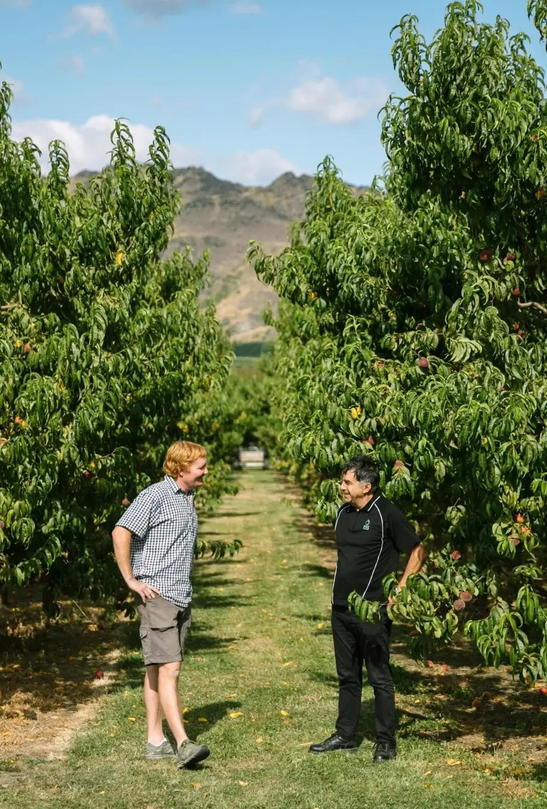
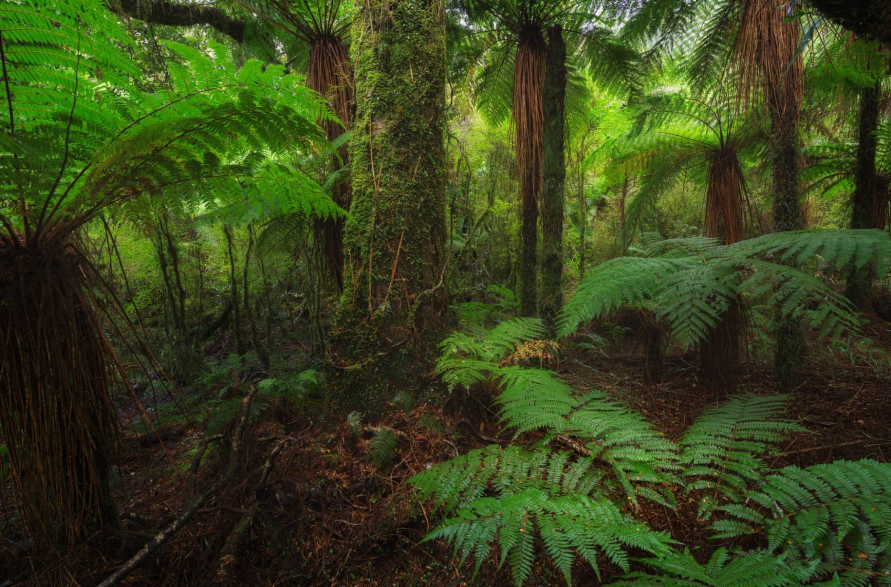
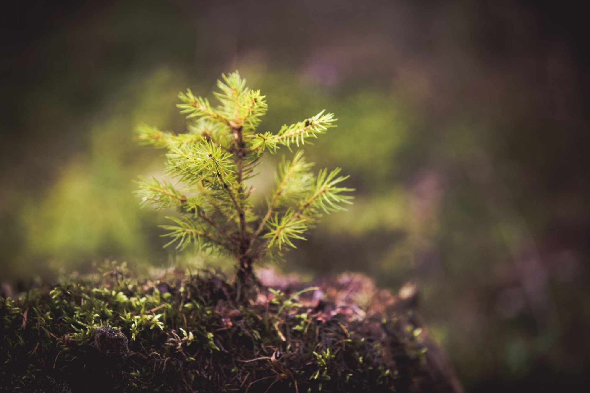

Land that lastsLonger than leases
We own rural land for the long term. The health of its soil, water and ecosystems decides what it will be worth in 20 years, so looking after it sits at the centre of how we invest.
Why we take itseriously
Land is the source of most of our food. Farming, horticulture and forestry earn over half of New Zealand’s export income [Source X], and support families, iwi, jobs and communities across the country.
Productive land is also shrinking. Between 2017 and 2019, the area of New Zealand land used for farming and horticulture fell by around 208,000 hectares, much of it to housing [Source X].
We don’t farm the land we own. We lease it to experienced operators. That means the decisions that shape its future are made in two places: when we choose what to buy and who to lease it to, and in the lease itself. That’s where we’ve put our commitment.
When land is looked after, it keeps producing, keeps its value and keeps supporting the people who work it.
Carbon removed by our forests in FY25[Source X]
Of our forestry in one of New Zealand’s largest pest management programmes[Source X]
Sustainability commitments written into every lease

Enduring Land for Life
Our Enduring Land for Life programme sets out how our tenants must care for the land we own. It isn’t a policy that sits on file. It’s part of every lease they sign.
It starts with who we work with: operators with a track record of caring for land, animals and people, and the financial strength to keep doing it through tough seasons. The bar is high because our expectations are high, but there’s no shortage of quality operators. We’re confident our farms are in safe hands.
- 01
We set the goals with our tenants
We develop and refine our commitments with our tenants, drawing on industry best practice, the latest scientific research and what we learn from our leading tenants.
- 02
The goals go into every lease
Once agreed, the commitments are written into each lease, so they’re binding. They cover six areas, with the detail matched to the type of land and where it is.
- 03
We audit regularly
Each farm is audited regularly against its commitments.
- 04
Tenants report to us
Tenants report on how they’re meeting their commitments and progressing towards each goal. We report on climate every year in our Climate Related Disclosure reports.
We favour long leases. A tenant who expects to farm the land for years has every reason to look after it.
From the soil up
Farms, orchards and forests are connected systems. Soil health affects what grows, what grows affects the animals and crops it supports, and the skills and morale of the people working the land affect all of it. So our goals cover the whole property, not one part of it.
Environmental
sustainability
We protect and improve soil health, water quality and biodiversity, and work to reduce greenhouse gas emissions for every unit of food and fibre produced.
What our leases set out
- Every pastoral farm has a Farm Environment Plan.
- Irrigation meets Irrigation New Zealand design and installation standards, and is timed using soil moisture monitoring, water budgets and climate data.
- Water use is metered and checked for efficiency.
- Fertiliser is matched to what pasture and crops need, and stored to avoid spills, keeping nitrogen losses within consented limits.
- Farming practices limit erosion, runoff and sediment loss.
- Effluent systems meet industry codes of practice, with enough storage to hold effluent until the soil is dry enough to absorb it.
- Stock are kept out of waterways, and planted margins along streams are maintained.
- Native vegetation, wetlands and springs are identified and protected, and mahinga kai values are taken into account.
- Silage pits, offal pits, rubbish and fuel are managed so nothing leaks into groundwater or streams.
- Greenhouse gas emissions are calculated using a recognised method, with a plan and actions to reduce them.
Economic
resilience
A tenant in a strong financial position can look after the land through good seasons and bad. Leasing also helps new farmers get started without buying land, and lets farmers nearing retirement release the value of theirs.
What we measure
- Tenants with equity of more than six times their annual rent
- Tenants with earnings of at least 1.4 times their annual rent (EBITDA lease cover)
- Tenants on an initial lease term of 10 years
- The share of our farms that were owner-operated before we bought them
Social
integrity
People make a farm work. We lease to tenants who keep their teams safe, house them in warm, healthy homes, pay them fairly and help them grow their careers.
What our leases set out
- Tenants comply with the Health and Safety at Work Act 2015, so everyone gets home safely at the end of each day.
- Leases rule out modern slavery.
- Worker housing on our land meets the healthy homes standards.
Animal
welfare
Well cared for animals are healthier and more productive. We expect our tenants to look after their animals’ physical and mental wellbeing.
What our leases set out
Tenants comply with the Animal Welfare Act 1999 and the Five Freedoms, so animals have:
- Proper and sufficient food and water
- Adequate shelter
- The freedom to express normal behaviour
- Appropriate handling
- Protection from injury and disease
From FY24, independent property inspectors and vets confirm this [X: confirm this is in place].
Mana
whenua
Mana whenua and ahi kā have an intergenerational role as kaitiaki and rangatira of the land, and hold mātauranga that helps maintain its mauri. We prioritise genuine relationships with them and work together on the wellbeing of the land.
Our goals in this area
X (to be supplied by the client)
Governance
Good outcomes start with the board. Our directors oversee the programme, set its goals and check progress against them.
What we measure
- How many directors are independent. All three of our current directors are [Source X].
- Diversity of age, gender and ethnicity on the board
- Directors’ experience in sustainability and land management
Caring for the land isn’t a cost.
It’s what makes it worth owning.
Projectsin action
Most of our work happens through our leases. Some projects we lead ourselves, with a focus on biodiversity, water quality and reducing emissions.
We’re also mapping the land we own to find marginal or less productive areas that could be planted or left to regenerate. That work helps control erosion, keeps sediment out of waterways, supports native species and stores carbon.

Project 01 · Biodiversity
Bringing back native forest
In the Manawatū-Whanganui region, our tenant New Zealand Forest Leasing (NZFL) is using pine as a nurse crop for native forest. The pines grow fast and form a canopy that shades out weeds and holds in moisture, giving native seedlings the conditions they need. Over time, the forest becomes a self-sustaining mix of native species.
Our 2,606-hectare site is part of one of New Zealand’s largest active pest management programmes [Source X]. Pest control protects kiwi, whio (blue duck), kārearea (New Zealand falcon) and pekapeka (native bat), and keeps kererū safe as they spread the seeds of native trees.
Across our forestry land, our forests removed 70,964 tonnes of carbon dioxide equivalent in FY25 [Source X].

Project 02 · Green finance
A green loan for our forests
Our forestry purchases are funded through a green loan that follows the Asia Pacific Loan Market Association Green Loan Principles. It supports UN Sustainable Development Goal 15, Life on land: protecting and restoring forests, and halting land degradation and biodiversity loss.

Project 03 · Water quality
Better effluent systems
An audit of our Farm Environment Plans found two farms that would benefit from better effluent storage. The upgrades seal the ponds so they can’t leak, and add storage so effluent can wait for dry days, when the soil can absorb it instead of it running into waterways. [X: status, planned or complete]

Project 04 · Emissions
Solar pumping by the river
We provided land and an easement for a joint project that replaced a [X: petrol or diesel] water pump beside a river with a solar pump. Only a small submersible pump now sits at the river. The panels and controls are well above flood level, cutting emissions and the risk of fuel reaching the river in a flood.
Measured and reported
We publish a Climate Related Disclosure report every year. Our greenhouse gas inventory is prepared to the international standard ISO 14064-1 and independently assured [Source X].
Experience at the table
Our board includes Tia Greenaway, who leads the Rautaki Māori team at He Pou a Rangi, the Climate Change Commission, and Sarah Kennedy, a trained veterinarian who held senior roles at Fonterra. Forester James Treadwell, who has served as President of the New Zealand Institute of Forestry, brings more than 30 years’ experience in sustainable forest management.
Meet our peopleTia Greenaway
Independent Director
Sarah Kennedy
Independent Director
James Treadwell
Forestry Specialist
Follow the work on the land
Sign up for company news and market recaps, sent straight to your inbox.